O yoga conduz à paz interior, uma prática que equilibra corpo, mente e espírito, refletindo seu ser real. Uma experiência transformadora de conexão com o seu eu interior.
Inaugurado por John Limbert, no inicio do ano de 2007. Idealizado em um momento de inspiração, o rascunho de um sonho tornou-se realidade.
O Centro é um refúgio para o corpo-mente-espírito, localizado em São Sebastião - SP, entre o mar e as montanhas em uma área aproximada de 30 hectares de Mata, onde são realizados cursos e retiros de Yoga, meditação e autoconhecimento.
Aqui você encontra equilíbrio, harmonia e renovação em um espaço onde corpo, mente e espírito se conectam.
Aqui, no Sattva Studio, você viverá uma experiência transformadora de conexão com o seu eu interior. Em um refúgio acolhedor, cercado pela natureza e pela tranquilidade, cada momento é um convite para desacelerar, respirar profundamente e voltar a ouvir aquilo que existe dentro de você.
Mais do que praticar yoga, queremos proporcionar uma jornada de equilíbrio entre corpo, mente e espírito. Um espaço para deixar o ritmo acelerado do dia a dia para trás, liberar tensões, cultivar a presença e encontrar momentos de verdadeira paz.
Permita-se estar presente, respeitar o seu tempo e descobrir, através da prática, uma nova forma de se conectar consigo mesmo e com o mundo ao seu redor.
O Yoga é um convite para desacelerar, perceber o próprio corpo e encontrar equilíbrio entre movimento, respiração e mente.

Pratique yoga, desenvolva sua flexibilidade e respire melhor enquanto constrói uma rotina mais equilibrada.